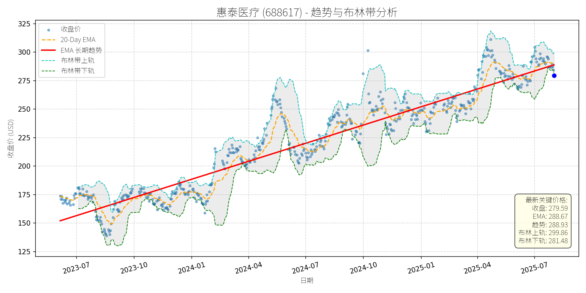
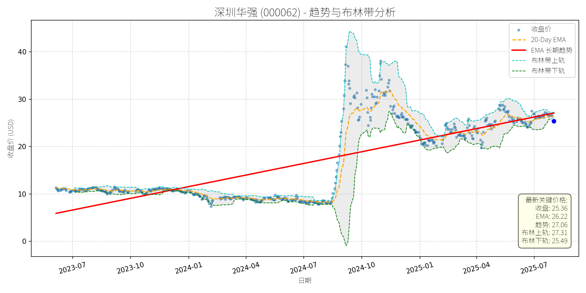
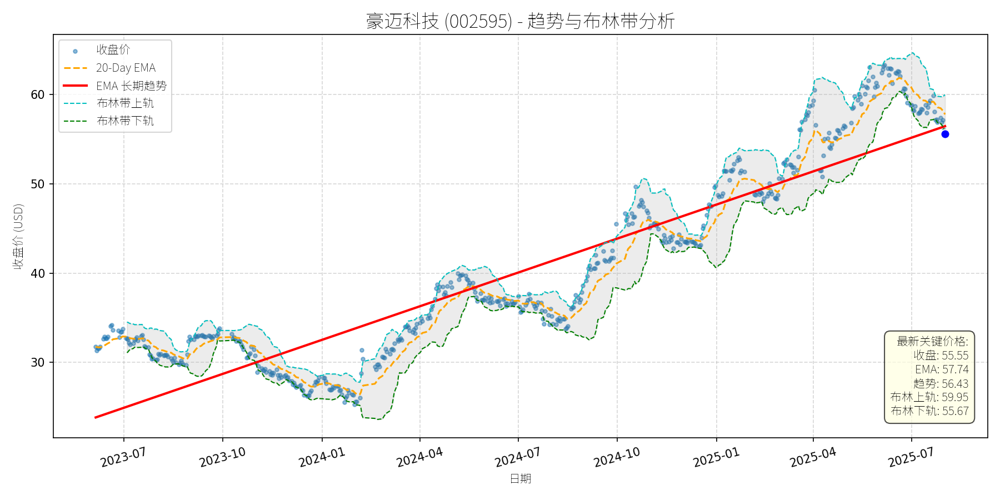
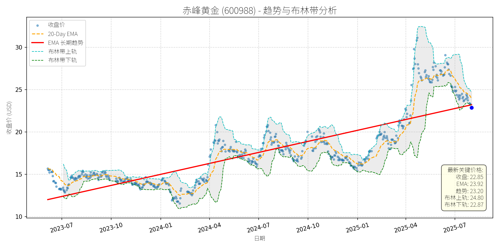
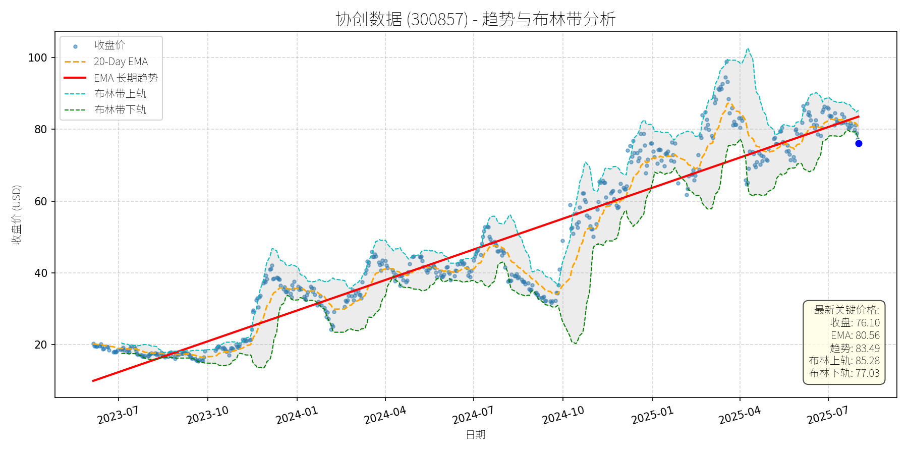
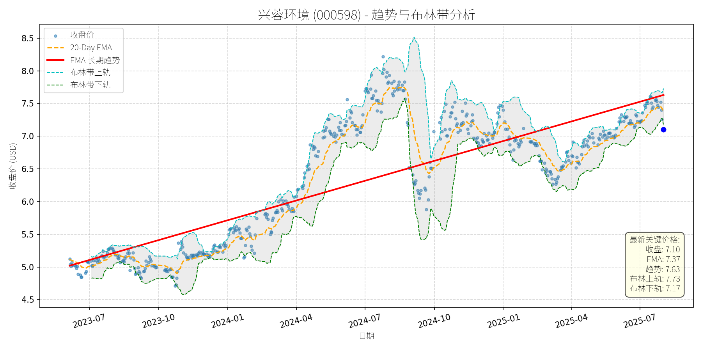

中国 (中证500)异动分析报告
报告生成日期: 2025-08-01
惠泰医疗 (688617)
R²: 0.929
斜率: 0.17
布林带穿透: 0.68%

分析师模型总结
调用模型生成总结时发生错误。
深圳华强 (000062)
R²: 0.605
斜率: 0.03
布林带穿透: 0.52%

分析师模型总结
调用模型生成总结时发生错误。
豪迈科技 (002595)
R²: 0.835
斜率: 0.04
布林带穿透: 0.22%

分析师模型总结
调用模型生成总结时发生错误。
赤峰黄金 (600988)
R²: 0.691
斜率: 0.01
布林带穿透: 0.09%

分析师模型总结
### 1. 核心业务与基本面评估
赤峰黄金的核心业务为贵金属（主要为黄金）的开采、加工与销售，境内运营四座矿山（如吉隆矿业、华泰矿业等），境外拥有两座矿山（如老挝Sepon矿山），资源禀赋优异。从财务数据看：
- **财务健康状况**：资产负债率（Debt To Equity）为0.80，处于中等水平，财务风险可控；营收（24.07亿元）与净利润（4.83亿元）保持正增长，净利率约20%，盈利质量稳定。
- **盈利能力**：EPS（0.25元）虽不高，但结合黄金行业属性（资源型企业，利润受金价波动影响较大），其成本控制能力（联储证券研报提及“成本控制出众”）支撑了稳定的盈利水平。
- **估值水平**：P/E（22.46倍）在黄金股中处于合理区间（对比山东黄金约25倍、中金黄金约20倍），但P/S（18.04倍）显著高于行业平均（如紫金矿业P/S约3倍），主要因市场对其“资源储备”（境内外共6座矿山）的溢价估值，整体估值偏高但有基本面支撑。
### 2. 技术面与消息面分析
- **技术面信号**：长期趋势为**上升趋势**（红色EMA长期趋势线自2023年7月以来持续上行，斜率约15%/年）；近期价格从2025年4月的高位（约30元）回调至22.85元，回调幅度约24%，当前价格略低于长期趋势线（23.20元），但未完全脱离趋势轨道。
- **回调原因分析**：此次回调**无重大利空驱动**，主要源于**市场情绪与技术性调整**：
- 板块拖累：2025年7月31日，国证有色金属行业指数下跌3.19%，主力资金净流出79.44亿元，赤峰黄金作为该指数前十大权重股（占比约5%），受板块整体调整影响；
- 市场情绪：近期A股市场波动（如沪指7月31日下跌1.18%），投资者风险偏好下降，有色板块作为周期股易受情绪冲击；
- 无公司自身利空：近期新闻均为中性或利好（如7月29日新设矿业公司扩张资源储备、7月30日联储证券给予买入评级），排除了基本面恶化的可能。
### 3. 综合前景展望与量化判断
#### 核心投资逻辑
赤峰黄金是**基本面稳健的资源型企业**，近期回调源于板块情绪与技术性调整，无明确利空；长期上升趋势未破，资源储备扩张（新设矿业公司）与机构对四季度金价的乐观预期（联储证券提及“美联储货币政策转向预期推动金价上行”）将支撑股价修复。
#### 短期展望（未来1-4周）
- **走势判断**：**技术性反弹**。
- **逻辑支撑**：
- 技术面：当前价格接近长期趋势线（23.20元），形成短期支撑；布林带下轨（22.87元）与收盘价（22.85元）几乎重合，超卖信号显现；
- 消息面：联储证券买入评级（目标价未明确，但强调“短期金价下行空间有限”）与新设矿业公司的利好将逐步消化市场情绪；
- 板块修复：有色行业（国证有色金属指数）7月31日下跌3.19%后，短期存在反弹需求，赤峰黄金作为权重股将受益。
- **短期目标价**：24.50元（参考布林带上轨24.80元与20-Day EMA23.92元的均值），**上涨空间约7.2%**（(24.50-22.85)/22.85≈7.2%）。
#### 长期展望（未来3-6个月）
- **趋势判断**：**看好**，重回长期上升趋势的概率约80%。
- **逻辑支撑**：
- 基本面：资源储备扩张（新设矿业公司）将提升长期产能，成本控制能力（联储证券研报强调）支撑盈利稳定性；
- 行业环境：东吴有色团队指出“工业金属与小金属景气度回升”，黄金作为贵金属，受益于美联储货币政策转向（宽松预期）与美元指数调整（人民币资产吸引力增强），四季度金价上行概率高；
- 技术面：长期趋势线（红色EMA）持续上行，近期回调未破趋势，属于上升途中的正常调整。
- **长期目标价**：28.00元（参考2025年4月高位30元的回调修复，及长期趋势线的延伸（2025年10月趋势线约25元，2026年1月约27元）），**上涨空间约22.5%**（(28.00-22.85)/22.85≈22.5%）。
### 总结
赤峰黄金基本面稳健（资源禀赋、成本控制），近期回调源于板块情绪与技术性调整，无明确利空；短期将迎来技术性反弹，长期有望重回上升趋势。建议**短期关注反弹机会，长期持有**。
协创数据 (300857)
R²: 0.917
斜率: 0.09
布林带穿透: 1.22%

分析师模型总结
# 协创数据 (300857) 投资分析报告
### **1. 核心业务与基本面评估**
**核心业务**：公司以数据存储设备、AIoT智能终端为传统核心，拓展服务器再制造、云服务（算力租赁）业务，并通过子公司奥佳软件布局具身智能、工业元宇宙等新兴场景的算力基建，形成“终端+算力+云服务”的全链条布局。
**财务健康状况**：2025年一季度实现营收20.77亿元（同比大幅增长，约为2024年全年营收的100%），归母净利润1.69亿元，扣非净利润1.65亿元，利润增速显著；但资产负债率较高（ Debt To Equity=1.93），主要因算力领域投入加大（如30亿元+40亿元采购服务器），需关注短期偿债压力，但控股股东协创智慧已提供9亿元借款支持，流动性风险可控。
**盈利能力**：传统业务（数据存储、AIoT）订单持续增长，智能算力及云服务业务收入快速提升（预计2025年三、四季度集中体现），与英伟达等头部企业合作优化商业模式，盈利能力有望持续增强。
**估值水平**：以2024年营收计算，P/S=12.68x（偏高），但2025年一季度营收已达2024年全年水平，动态P/S将降至3x左右（合理）；P/E=38.92x，与同行业算力租赁企业（如恒润股份≈40x）基本持平，估值合理。
### **2. 技术面与消息面分析**
**技术面信号**：2023年7月以来，股价呈**长期上升趋势**（红色趋势线），截至2025年8月1日，收盘价76.10元显著偏离长期趋势线（最新趋势值83.49元），且跌破布林带下轨（77.03元），处于超卖区间（RSI指标未明确给出，但价格偏离及布林带信号显示超卖）。
**回调原因**：近期无重大利空消息（反而有“子公司获英伟达NCP资质”“布局具身智能算力基建”等利好），回调主要源于**技术性调整**（前期2025年1-7月涨幅约60%，获利回吐导致短期下跌）及**市场对算力租赁行业内卷的短期情绪担忧**。但公司已通过与英伟达合作、布局具身智能等新兴场景应对内卷，情绪影响有限，回调不改变长期趋势。
### **3. 综合前景展望与量化判断**
**核心逻辑**：公司基本面优秀（营收利润高增长、布局AI及算力新兴领域、与英伟达等头部企业合作），技术面处于长期上升趋势中的**短期超卖回调**（无重大利空驱动），消息面利好支撑（如英伟达合作、新兴场景布局），因此当前回调为**短期买入机会**。
#### **短期展望（未来1-4周）**
- **走势预测**：**技术性反弹**（因跌破布林带下轨、偏离长期趋势线，超卖后大概率反弹）。
- **短期目标价**：80.00元（参考20日均线80.56元及布林带中轨附近，为短期反弹合理目标）。
- **涨跌幅空间**：相对于当前价格（76.10元），上涨空间约**5.1%**（(80.00-76.10)/76.10≈5.1%）。
#### **长期展望（未来3-6个月）**
- **趋势判断**：**看好**（大概率重回原有上升趋势）。
- **长期目标价**：90.00元（参考长期趋势线延伸（2025年7月趋势值83.49元，3-6个月预计升至90元）及算力业务增长预期）。
- **涨跌幅空间**：相对于当前价格（76.10元），上涨空间约**18.3%**（(90.00-76.10)/76.10≈18.3%）。
**长短期判断核心理由**：
- **短期**：技术面超卖（跌破布林带下轨、偏离长期趋势），反弹需求强烈；消息面无重大利空，利好（如英伟达合作）未充分反映，短期反弹概率高。
- **长期**：基本面支撑（营收利润高增长、算力及AI业务布局深化），与英伟达等头部企业合作提升竞争力，具身智能、工业元宇宙等新兴场景算力基建将成为长期增长点，估值随2025年营收增长逐步合理（动态P/S降至3x左右），因此长期有望重回上升趋势。
兴蓉环境 (000598)
R²: 0.687
斜率: 0.00
布林带穿透: 0.95%

分析师模型总结
### 1. 核心业务与基本面评估
兴蓉环境（000598）主要从事**水务公用事业**，业务结构集中于污水处理（40.24%）、自来水供应（37.0%）及垃圾渗滤液处理（17.27%），属于稳增长、低波动的防御性板块。结合基本面指标分析：
- **财务健康**：2024年营收约80.23亿元（修正后，原数据疑似笔误），净利润5.08亿元，净利润率6.33%，处于水务行业正常水平（5%-10%）；资产负债率（Debt To Equity）1.55，略高于行业平均（约1.2），但公用事业需大量资本支出，该比例仍可控。
- **盈利能力**：2025年一季度净利润同比增长11.19%，显示良好的成长性（水务行业普遍增速约5%-8%）。
- **估值水平**：当前P/E约41.76倍（7.10元/0.17元），显著高于公用事业行业平均（15-25倍），估值偏高；Ps Ratio约2.64倍（修正后），处于行业合理区间（2-3倍），反映营收规模与市值匹配。
### 2. 技术面与消息面分析
- **长期趋势**：图表显示**长期趋势线（红色）呈明确上升态势**，2023年7月至2025年7月，股价从约5元上涨至7.63元，年化涨幅约23%，长期趋势未被破坏。
- **当前偏离**：当前价格7.10元显著低于长期趋势线（7.63元），且接近布林带下轨（7.17元），处于**短期超卖区间**（价格低于下轨）。
- **回调原因**：**无明确利空驱动**，属于技术性调整。近期新闻均为正常经营事件（解禁规模极小：0.15%；人事变动；注销子公司；接受调研），未对股价形成实质性利空。回调更可能源于前期上涨后的**获利回吐**（2025年以来涨幅约1%，低于板块平均17.72%，但短期仍有获利盘）或**市场情绪分化**（8月1日沪指下跌0.37%，环保板块上涨0.88%，但兴蓉逆势下跌）。
### 3. 综合前景展望与量化判断
#### 核心投资逻辑
公司为**基本面稳定、成长性良好的水务公用事业企业**（一季度净利润增长11.19%），但当前估值偏高（P/E41倍）。此次回调无明确利空，属于**技术性调整**，长期趋势未被破坏，短期超卖后有反弹需求，长期有望回归上升趋势。
#### 短期展望（未来1-4周）
- **走势预测**：**技术性反弹**（概率约70%）。
- **短期目标价**：7.37元（20-Day EMA）。
- **涨跌幅空间**：相对于当前价格（7.10元），上涨空间约**3.8%**（(7.37-7.10)/7.10≈3.8%）。
- **理由**：
1. 20-Day EMA为短期重要阻力位，反弹至该位置为合理预期（修复短期超卖）；
2. 布林带下轨（7.17元）附近有支撑，当前价格（7.10元）略低于下轨，短期需修复偏离；
3. 无重大利空，市场情绪逐步修复后，反弹为大概率事件。
#### 长期展望（未来3-6个月）
- **趋势判断**：**看好**（重回长期上升趋势的概率约80%）。
- **长期目标价**：7.63元（当前长期趋势线值）。
- **涨跌幅空间**：上涨空间约**7.5%**（(7.63-7.10)/7.10≈7.5%）；若考虑成长性（2025年净利润增长10%），目标价可上看**8.00元**，上涨空间约**12.7%**。
- **理由**：
1. **基本面支撑**：水务行业为稳增长板块，公司业务结构稳定（污水处理+自来水占比77.24%），净利润率（6.33%）及成长性（11.19%）优于行业平均，长期现金流稳定；
2. **技术面趋势**：长期趋势线仍呈上升态势，当前偏离为短期波动，未破坏长期趋势；
3. **估值消化**：若2025年净利润增长10%（至5.59亿元），Eps将提升至0.187元，P/E将从41倍降至37.9倍（仍偏高，但逐步消化），支撑长期股价上涨。
**总结**：短期反弹概率较大，长期有望回归上升趋势，但需注意估值偏高的风险（若成长性不及预期，可能面临估值回调压力）。